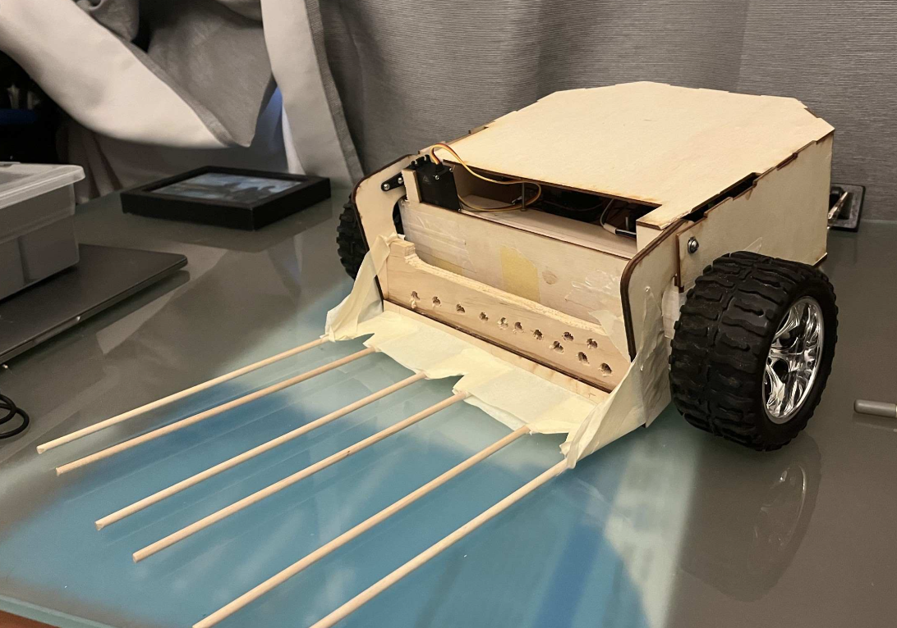
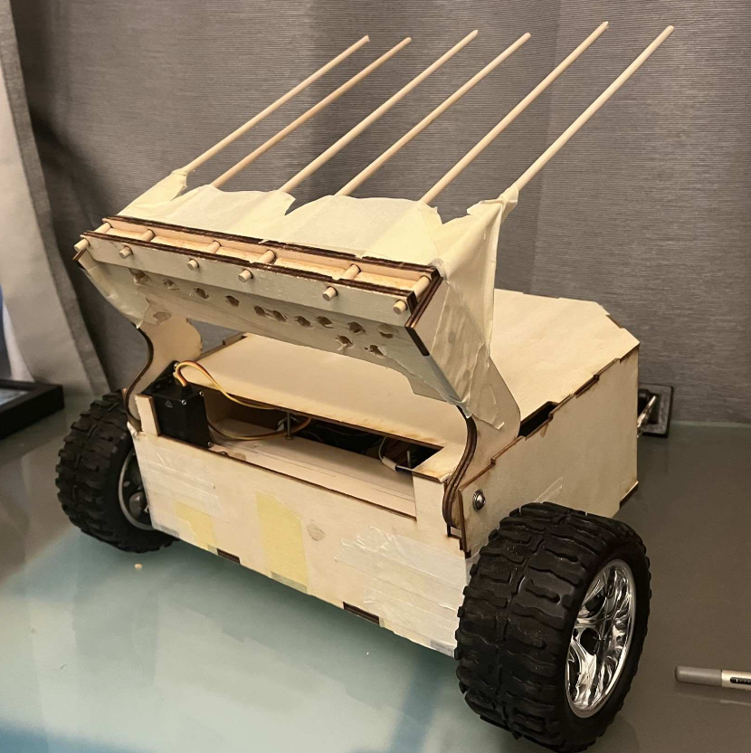
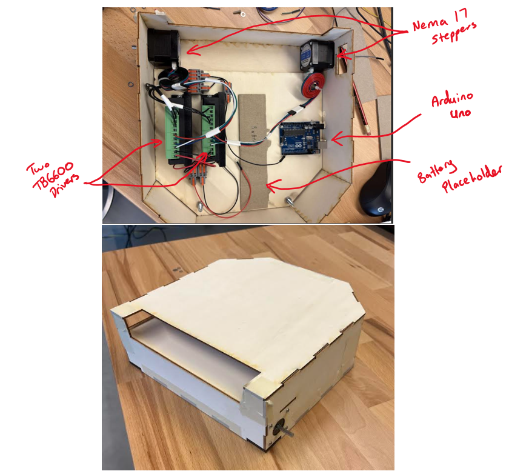
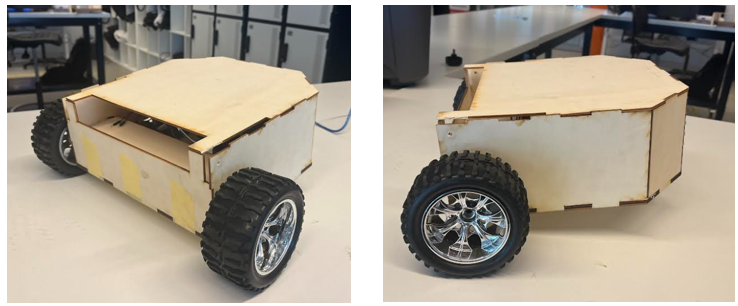
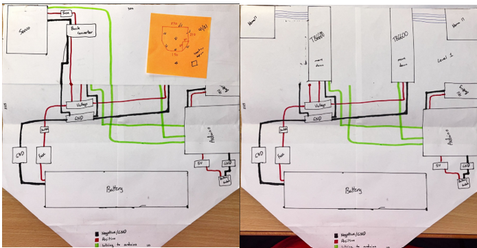

Warman Challenge robot
An autonomous robot designed to collect three different-sized balls, cross a pivoting seesaw and deposit its payload in an end zone. Our team placed second overall at UTS.
The challenge
The Warman Design and Build Challenge required our team to design and construct a robot that could collect three model meteorites of different sizes and move them to a designated end zone. The robot had to navigate a ramp and pivoting seesaw within the competition time limit.
We developed a front-mounted scoop to collect the balls, a stepper-driven chassis to traverse the course, and a sequence of movements to complete the task with minimal intervention.
My contribution
I worked on the chassis and drivetrain, including CAD design, construction, wheel mounting and testing. I also helped select the NEMA17 motors and TB6600 drivers and drafted the wiring plan for the robot's electronic system.
I developed and refined movement logic for the course. When the seesaw's drop destabilised the robot, I added a reverse movement state and tuned its timing to help the robot settle before continuing.
Design and testing
- Wheel mounting: I iterated the adapters that connected the larger wheels to the stepper shafts after early versions slipped or rotated unevenly.
- Ramp traversal: I used force and torque calculations to examine whether the drivetrain could climb the course while carrying the robot and its payload.
- Scoop weight: the initial metal rods added too much mass. Our team changed to lighter birch dowels to reduce the load on the drivetrain.
- Reliability: testing exposed an intermittent connection in a WAGO connector, which we repaired before the final demonstration.
Final robot


Design development



Competition demonstration
A competition run showing the robot collecting balls, crossing the ramp and seesaw, and depositing its payload. We placed second overall at UTS.